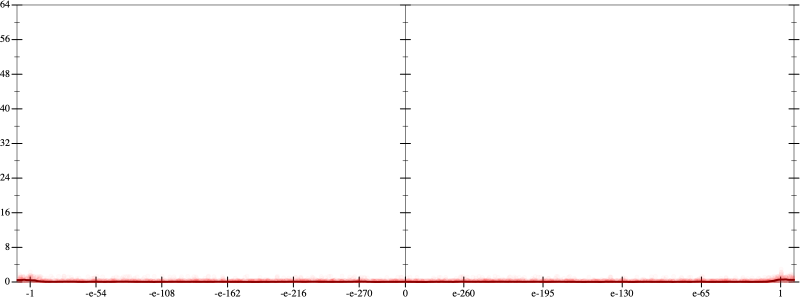
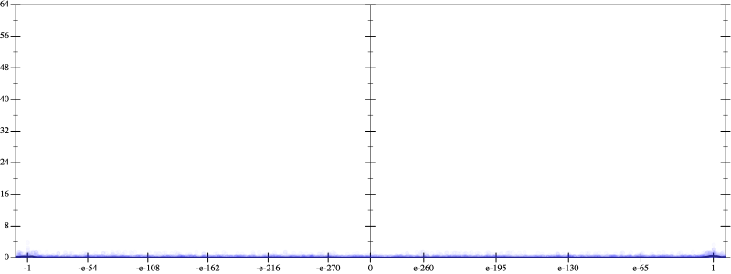
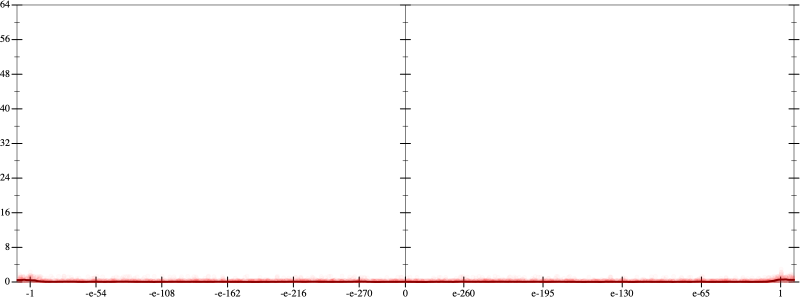
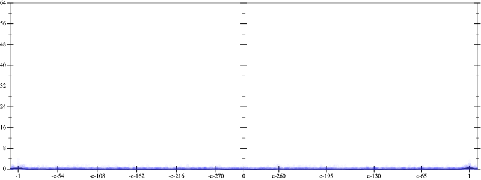

Initial program 0.1
\[\left(120.0 \cdot x + -160.0 \cdot \left(\left(x \cdot x\right) \cdot x\right)\right) + 32.0 \cdot \left(\left(\left(\left(x \cdot x\right) \cdot x\right) \cdot x\right) \cdot x\right)\]
- Using strategy
rm Applied pow30.1
\[\leadsto \left(120.0 \cdot x + -160.0 \cdot \left(\left(x \cdot x\right) \cdot x\right)\right) + 32.0 \cdot \left(\left(\color{blue}{{x}^{3}} \cdot x\right) \cdot x\right)\]
Applied pow-plus0.1
\[\leadsto \left(120.0 \cdot x + -160.0 \cdot \left(\left(x \cdot x\right) \cdot x\right)\right) + 32.0 \cdot \left(\color{blue}{{x}^{\left(3 + 1\right)}} \cdot x\right)\]
Applied pow-plus0.1
\[\leadsto \left(120.0 \cdot x + -160.0 \cdot \left(\left(x \cdot x\right) \cdot x\right)\right) + 32.0 \cdot \color{blue}{{x}^{\left(\left(3 + 1\right) + 1\right)}}\]
 
